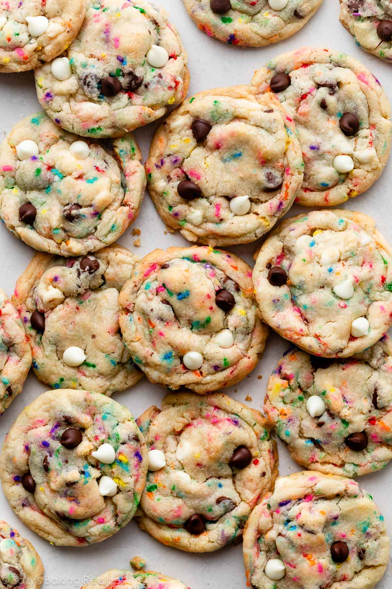

Sally's recipes

Ingredients
-
Cake Mix: My team and I prefer baking from scratch, but adding dry cake
mix is the SECRET to this recipe. I usually reach for vanilla cake mix,
but any flavor you love works. You won’t need the whole box of cake mix,
so use the leftovers another time to make a batch of cake batter rice
krispie treats!
-
Chocolate Chips & White Morsels: I love to use a mix of both in these
cookies. Semi-sweet chocolate chips make them taste like classic
chocolate chip cookies, while white chocolate morsels taste like
frosting—adding to the flavor that’s reminiscent of birthday cake.
-
Sprinkles: Use your favorite color sprinkles here! I used rainbow
sprinkles today, but love switching them up for different holidays. You
can customize these cookies with a mix of specific colors or holiday
sprinkles. Have fun with them!
Preparation
-
The cookie dough does need to chill, so if you’re in a rush, try these
giant chocolate chip cookies instead (no dough chilling!). Sift the
dry ingredients together. Cream the wet ingredients together. Combine
the wet and dry ingredients. Then add the chocolate chips and sprinkles.
Chill the cookie dough. This step is imperative. If you skip it, your
cookies will spread into a flat, greasy mess. Chilling the dough for at
least 2 hours firms up the butter, allows the flour to absorb the wet
ingredients, and helps prevent the cookies from overspreading. If you’re
interested, I wrote a post all about how to prevent cookies from
spreading. It’s helpful to read before making ANY batch of cookies.
-
Roll the cookie dough into balls. Use about 1.5 Tablespoons of cookie
dough per cookie. Shape your cookie dough balls to be taller than they
are wide—see my tall cookie trick below.
-
Bake. Bake the cookies until the edges are lightly browned. The centers
will still appear very soft, but they’ll continue to set as the cookies
cool. While the cookies are still warm, I like to press a few extra
chocolate chips into the tops. This is just for looks!
-
Before I leave you with the recipe, here’s one final tip. Use my
favorite tall cookie trick to reduce excess spreading. Roll your dough
balls to be taller rather than wider. This doesn’t necessarily mean
using more dough per cookie—we’ll simply shape the cookie dough ball to
be nice and tall, with a firm solid bottom to ensure the cookie doesn’t
topple over as it bakes. This one trick gives us perfectly thick and
chewy cookies every time.